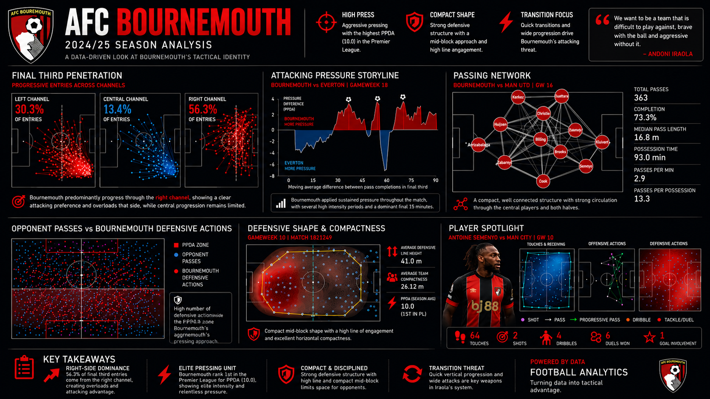
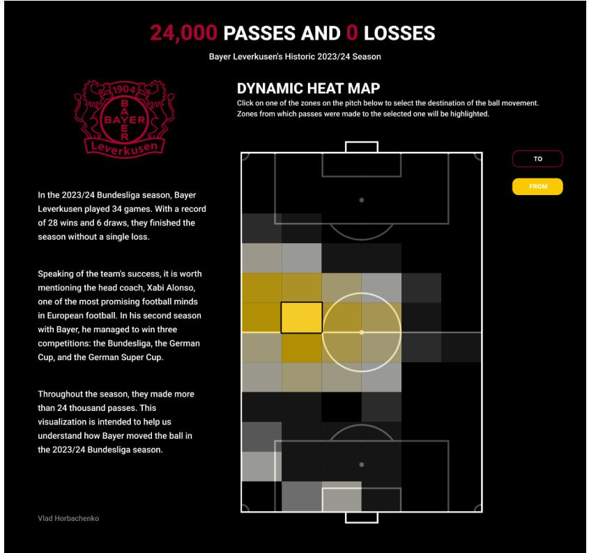

PROJECT 01 · FOOTBALL ANALYTICS
AFC Bournemouth — Premier League 2024/25
A tactical and performance analysis exploring Bournemouth's playing style using event data, team metrics, and visualizations.
View project ↗I'm Amr Rabie, a Computer Science graduate passionate about data analytics, business intelligence, and football analysis. I turn raw datasets into clear insights, useful dashboards, and stories that make sense.
I enjoy connecting technical analysis with real questions — whether that's understanding business performance or how a football team plays.
I'm a Computer Science graduate with hands-on experience through academic and personal analytics projects, Data Analysis training at the National Telecommunication Institute (NTI), and a two-month remote internship at Brainwave Matrix. I enjoy working across the full analysis process: preparing data, exploring patterns, building visualizations, and explaining findings.
A structured problem-solving mindset, attention to data quality, and the ability to communicate findings clearly. I'm interested in junior opportunities in data analysis, reporting, business intelligence, and football analytics.
From raw files and queries to dashboards, visual analysis, and performance insights.
Python, Pandas, NumPy, data cleaning, transformation, exploratory analysis.
Querying, filtering, aggregations, joins, and extracting useful datasets.
Power Query, data modeling, DAX, PivotTables, reporting, and dashboards.
Matplotlib, mplsoccer, KPI analysis, xG, PPDA, passing networks, and tactical patterns.
A selection of football analytics and business intelligence projects. Add your own dashboard screenshots to the image slots.

A tactical and performance analysis exploring Bournemouth's playing style using event data, team metrics, and visualizations.
View project ↗
An analysis of the unbeaten 2023/24 Bundesliga campaign, covering team performance, xG, pressing, possession, and player metrics.
View project ↗
An interactive dashboard exploring streaming performance, top artists and tracks, and audio feature patterns.
View project ↗
Dashboard work focused on sales trends, product performance, KPI monitoring, and communicating business results.
View project ↗A practical process that keeps the analysis focused, reliable, and easy to understand.
Define the question, context, and metrics that matter.
Clean, validate, transform, and organize the data.
Explore trends, compare performance, and test ideas.
Build clear visuals and explain the key findings.
Academic foundation in computing, programming, and problem solving.
Practical data analysis and business intelligence training at the National Telecommunication Institute.
Two-month remote internship experience.
Supervised Machine Learning and Machine Learning Specialization coursework.
I'm open to Junior Data Analyst, Data Analyst, and Football Data Analyst opportunities.